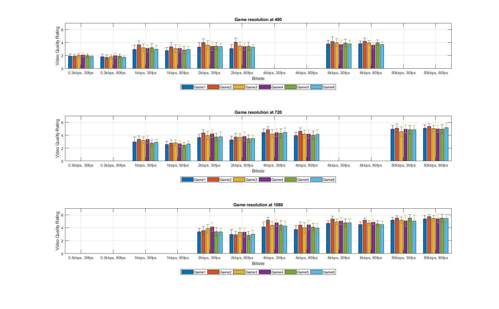

T = readtable("Gaming_Video_Quality_dataset.xlsx"); plotgamebar('480', T, 1) plotgamebar('720',T, 2) plotgamebar('1080',T, 3)
Below is the content of the function plotgamebar used to plot the bars.
function[] = plotgamebar(resolution, T, plotID) err = double.empty(6,0); y = double.empty(6,0); for i = 1:12 switch i case 1 current_bitrate = '300'; current_fps = '30'; case 2 current_bitrate = '300'; current_fps = '60'; case 3 current_bitrate = '1000'; current_fps = '30'; case 4 current_bitrate = '1000'; current_fps = '60'; case 5 current_bitrate = '2000'; current_fps = '30'; case 6 current_bitrate = '2000'; current_fps = '60'; case 7 current_bitrate = '4000'; current_fps = '30'; case 8 current_bitrate = '4000'; current_fps = '60'; case 9 current_bitrate = '6000'; current_fps = '30'; case 10 current_bitrate = '6000'; current_fps = '60'; case 11 current_bitrate = '50000'; current_fps = '30'; case 12 current_bitrate = '50000'; current_fps = '60'; end T_bit_fps = T(contains(T.Condition_params, current_bitrate),:); T_bit_fps = T_bit_fps(contains(T_bit_fps.Condition_params, current_fps),:); new_T = table([1:6]', zeros(6,1), zeros(6,1),zeros(6,1)); new_T.Properties.VariableNames{'Var1'} = 'Game'; new_T.Properties.VariableNames{'Var2'} = 'Mean_VQ'; new_T.Properties.VariableNames{'Var3'} = 'SEM_VQ'; new_T.Properties.VariableNames{'Var4'} = 'CI95'; T_res = T_bit_fps(contains(T_bit_fps.Condition_params, resolution),[2 8]); VQ_Game1 = T_res(contains(T_res.Game, 'Game1'), 2); VQ_Game2 = T_res(contains(T_res.Game, 'Game2'), 2); VQ_Game3 = T_res(contains(T_res.Game, 'Game3'), 2); VQ_Game4 = T_res(contains(T_res.Game, 'Game4'), 2); VQ_Game5 = T_res(contains(T_res.Game, 'Game5'), 2); VQ_Game6 = T_res(contains(T_res.Game, 'Game6'), 2); N = size(VQ_Game1,1); % Number of ?Experiments? In Data Set Game1_SEM = std(table2array(VQ_Game1))/sqrt(N); % Compute ?Standard Error Of The Mean? Game2_SEM = std(table2array(VQ_Game2))/sqrt(N); Game3_SEM = std(table2array(VQ_Game3))/sqrt(N); Game4_SEM = std(table2array(VQ_Game4))/sqrt(N); Game5_SEM = std(table2array(VQ_Game5))/sqrt(N); Game6_SEM = std(table2array(VQ_Game6))/sqrt(N); Game1_mean = mean(table2array(VQ_Game1)); Game2_mean = mean(table2array(VQ_Game2)); Game3_mean = mean(table2array(VQ_Game3)); Game4_mean = mean(table2array(VQ_Game4)); Game5_mean = mean(table2array(VQ_Game5)); Game6_mean = mean(table2array(VQ_Game6)); new_T{1,3} = Game1_SEM; new_T{2,3} = Game2_SEM; new_T{3,3} = Game3_SEM; new_T{4,3} = Game4_SEM; new_T{5,3} = Game5_SEM; new_T{6,3} = Game6_SEM; new_T{1,2} = Game1_mean; new_T{2,2} = Game2_mean; new_T{3,2} = Game3_mean; new_T{4,2} = Game4_mean; new_T{5,2} = Game5_mean; new_T{6,2} = Game6_mean; t_score = tinv([0.025 0.975], N-1); % Calculate 95% Probability Intervals Of t-Distribution new_T.CI95 = new_T.Mean_VQ + t_score.*new_T.SEM_VQ; % Calculate 95% Confidence Intervals Of All Experiments At Each Value Of ?x? new_T.CI95 = diff(new_T.CI95')'; err = [err new_T.CI95]; y = [y new_T.Mean_VQ]; end y = y'; err = err'; set(gcf, 'Units', 'Normalized', 'OuterPosition', [0, 0.04, 0.5, 0.8]); subplot(3,1,plotID) h1 = bar(y); ax = gca; ax.YLim = [0 7]; xticks([1 2 3 4 5 6 7 8 9 10 11 12]); xticklabels({'0.3kbps, 30fps','0.3kbps, 60fps','1kbps, 30fps','1kbps, 60fps','2kbps, 30fps ','2kbps, 60fps', '4kbps, 30fps','4kbps, 60fps', '6kbps, 30fps','6kbps, 60fps','50kbps, 30fps','50kbps, 60fps'}); hold on legend('Game1','Game2','Game3','Game4','Game5', 'Game6','Location','bestoutside','Orientation','horizontal','AutoUpdate','off'); ngroups = size(y, 1); nbars = size(y, 2); %Calculating the width for each bar group groupwidth = min(0.8, nbars/(nbars + 1.5)); for i = 1:nbars x = (1:ngroups) - groupwidth/2 + (2*i-1) * groupwidth / (2*nbars); errorbar(x, y(:,i), err(:,i), '.'); end hold off grid title(strcat('Game resolution at ',{' '}, resolution)) xlabel('Bitrate') ylabel('Video Quality Rating') end